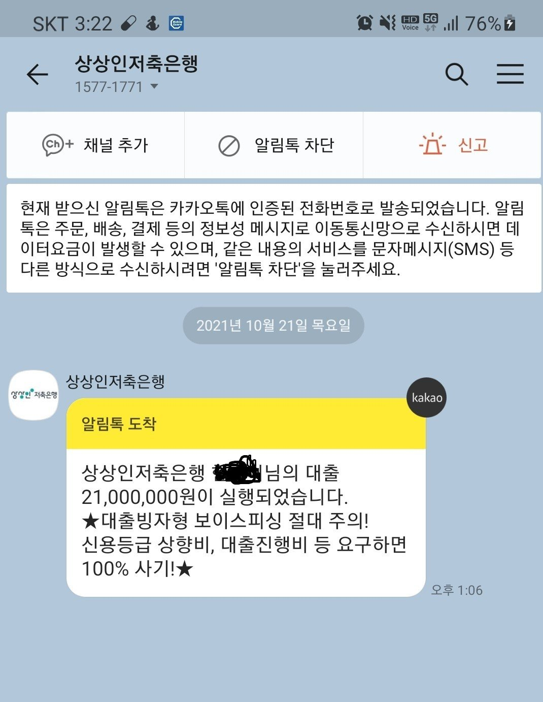

[차량담보대출] 조영우이사님 감사합니다!!!!♥♥♥♥♥

[기대출내역]
bnk캐피탈 2300 / 4%
하나은행 1800 / 4%
키움 1200 / 16.9%
카드론 300 / 19%
카드값 900
월급의 90%가 대출+카드론+카드값으로 나가서
이러다 다 터질것같아 뭐라도 갈아타거나 카드론 이라도 막아야 될것같아서
이사님께 SOS!!!
이직한지 고작 3개월!!! 프리랜서라 월급이 일정하지 않아서 가조회해도 한도 안나올까봐
엄청 조마조마조마 했는데에에!!!
차량담보대출로 신속히 진행 해주셨어요~~~~~
2100만원에 처음에 15.9% 심사 나왓는데
최종 14%대로 해서 최종승인 났습니다.^^
키움 + 카드론 + 카드값 (일부) 정리하고 숨통이 트이네용 ㅎㅎㅎㅎㅎ
매년마다 항상 조이사님 도움받고 매번 살아나네용!!!!
올해도 감사합니다아아아!